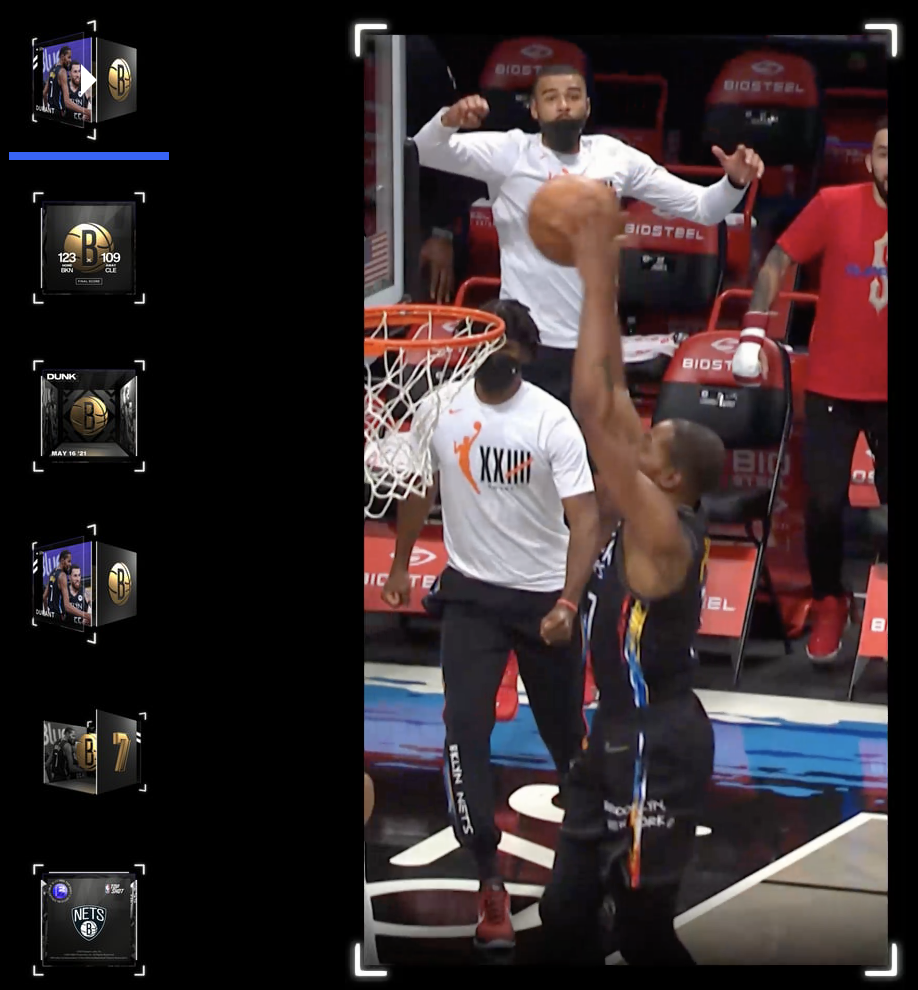
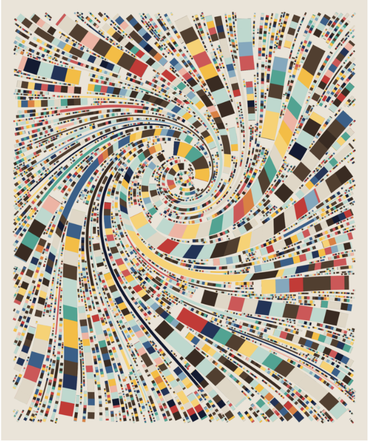
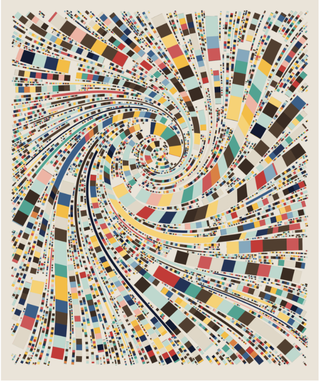

Welcome! By exploring this website, I hope that you get to learn something new about an application of blockchain technologies: NFTs!
What is a blockchain?
Simply put, a blockchain is a ledger that records information that is viewable by the public. Visually, you can imagine this as a literal chain composed of smaller blocks, where each block consists of multiple transactions. A blockchain utilizes cryptography and distributed computing to enable a network of computers to enforce and agree upon the sequence of transactions. At a high level, one can think of a blockchain as a database, where entries cannot be altered after being written, and written entries are agreed upon by a specific consensus mechanism.
Simply put, a blockchain is a ledger that records information that is viewable by the public. Visually, you can imagine this as a literal chain composed of smaller blocks, where each block consists of multiple transactions. A blockchain utilizes cryptography and distributed computing to enable a network of computers to enforce and agree upon the sequence of transactions. At a high level, one can think of a blockchain as a database, where entries cannot be altered after being written, and written entries are agreed upon by a specific consensus mechanism.
What is an NFT? Where does the value of an NFT come from? Why can't I just screenshot it?
An NFT, or non-fungible token, is a provably unique piece of data that is stored on a blockchain. NFTs have become assets of the digital world. Images (JPEGs), GIFs, and video game characters have all been created as NFTs in the crypto space. NFTs present a real and tangible application of blockchain technology, where ownership in the digital world has taken the world by storm. The intrinsic value of owning an NFT is exactly the same as intrinisic value that is derived from owning a piece of original art. While there may be print companies of the Mona Lisa, there is only one original. Similarly, many people can screenshot your image - but only you would have provable ownership of the original piece of art. As more and more of our lives becomes digital, it only makes sense that our assets become digitzed as well.
An NFT, or non-fungible token, is a provably unique piece of data that is stored on a blockchain. NFTs have become assets of the digital world. Images (JPEGs), GIFs, and video game characters have all been created as NFTs in the crypto space. NFTs present a real and tangible application of blockchain technology, where ownership in the digital world has taken the world by storm. The intrinsic value of owning an NFT is exactly the same as intrinisic value that is derived from owning a piece of original art. While there may be print companies of the Mona Lisa, there is only one original. Similarly, many people can screenshot your image - but only you would have provable ownership of the original piece of art. As more and more of our lives becomes digital, it only makes sense that our assets become digitzed as well.

NFTs represent a real utility for blockchain technologies. In a sense, NFTs have bridged the gap between crypto and non-crypto people by introducing non-crypto people into the crypto space.
Here are some cool facts to ramp you up to speed about the NFT space:
NFTs can be one-off pieces of art, or may come in collections.
The "secondary market" of NFTs refers to the exchange platforms, such as OpenSea (and soon to include Coinbase!), where people can buy and sell NFTs with each other.
Recently, NFTs have hit $10B in trading volume. Insane!
A lot of cool projects (see Axie Infinity, below), require NFTs to participate. NFTs are a way to prove exclusivity. With this perspective, opportunities are endless (for example, access to VIP events).
Multiple networks support the development of NFT projects. The two most popular networks are Ethereum and Solana. Flow is also very popular, with projects such as CryptoKitties and NBA TopShot.
A lot of money is involved in NFTs. CryptoPunks (above) have a floor (minimum price) of about $500,000. An average collection mints (sells) for about $3.6MM.
Beeple, a prominent artist in the NFT space, sold a piece of NFT art for $69MM!
Besides NFTs, a lot of interesting verticals exist in crypto: DAOs, yield farming, liquid staking, parallel finance, and much more. NFTs are a great way to get introduced to the broader space of blockchain technologies!
Besides NFTs, a lot of interesting verticals exist in crypto: DAOs, yield farming, liquid staking, parallel finance, and much more. NFTs are a great way to get introduced to the broader space of blockchain technologies!
Sports (NBA Topshot), Gaming (Axie Infinity), and Generative Art (Fidenza)

 
